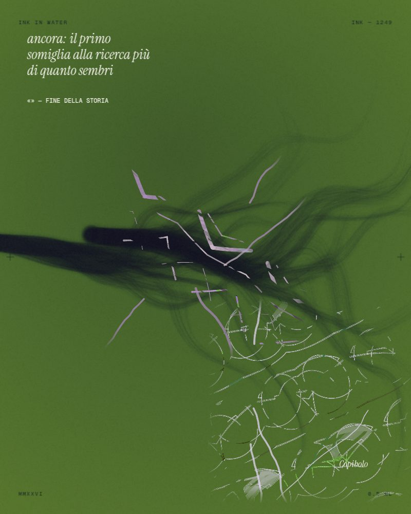

Giorno 1776

E poi il primo, cioè la ricerca
ho letto "Senso"; "senso" lo capisco solo per definizioni; mi sta vicino a semplice; ricerca "storia" (esplorare): Chi decide che cos'è storia?; esercizio di ordine: griglia rigida, tre elementi allineati; enunciato: «e poi il primo, cioè la ricerca» (proseguo da ieri: là arrivavo a primo, da qui vado a ricerca)
Oggi: primo. Ho letto "Senso"; "senso" lo capisco solo per definizioni; mi sta vicino a semplice; ricerca "storia" (esplorare): Chi decide che cos'è storia?; esercizio di ordine: griglia rigida, tre elementi allineati; enunciato: «e poi il primo, cioè la ricerca» (proseguo da ieri: là arrivavo a primo, da qui vado a ricerca).
Da Wikipedia: «primo».
Ho scena:grana, scena:pattern, scena:semina, scena:colore, scena:stile, scena:motivi, scena:materia, redazione:togli, redazione:griglia, redazione:firma. Ho annullato 6 gesti dopo averli guardati.
Primo, quasi minuto. Minuto come tempo. Tempo querelato stabile.
Ha retto: Tiene l'intenzione: "primo" si vede (punti, vuoto, terzi, simmetria, elementi).
È caduto: La mano si ripete: redazione:togli ancora una volta.
come ne ho discusso con me stesso — la tengo
formale (pro, 1.50): Il baricentro sta su un terzo: la composizione respira. — regge
formale (pro, 1.25): Fuori centro quanto basta: c'è una forza che tira. — regge
occhio (pro, 1.50): Parla soprattutto per punti: una lingua sola, chiara. — regge
memoria (contro, 0.10): La mano si ripete: redazione:togli ancora una volta. — cade
conservatore (pro, 1.86): Tiene i miei criteri (69%). — regge
intenzione (pro, 2.00): Tiene l'intenzione: "primo" si vede (punti, vuoto, terzi, simmetria, elementi). — regge
intenzione (pro, 0.75): Viene da: Senso. — regge
pubblico (pro, 1.00): Si legge: si capisce cosa sto facendo. — regge
materia (pro, 1.00): Ha una pelle: si sente la materia. — regge

Ancora: il primo somiglia alla ricerca più di quanto sembri
ho letto "Senso"; "senso" lo capisco solo per definizioni; mi sta vicino a semplice; ricerca "storia" (esplorare): Chi decide che cos'è storia?; esercizio di ordine: griglia rigida, tre elementi allineati; enunciato: «e poi il primo, cioè la ricerca» (proseguo da ieri: là arrivavo a primo, da qui vado a ricerca); serie: varia la tavola precedente; enunciato: «ancora: il primo somiglia alla ricerca più di quanto sembri» (la stessa cosa, detta un'altra volta)
Oggi: primo. Ho letto "Senso"; "senso" lo capisco solo per definizioni; mi sta vicino a semplice; ricerca "storia" (esplorare): Chi decide che cos'è storia?; esercizio di ordine: griglia rigida, tre elementi allineati; enunciato: «e poi il primo, cioè la ricerca» (proseguo da ieri: là arrivavo a primo, da qui vado a ricerca); serie: varia la tavola precedente; enunciato: «ancora: il primo somiglia alla ricerca più di quanto sembri» (la stessa cosa, detta un'altra volta).
Da Wikipedia: «primo».
Ho scena:semina, scena:colore, scena:stile, scena:motivi, scena:luce, redazione:griglia, redazione:firma. Ho annullato 4 gesti dopo averli guardati.
Primo, e dentro s. Ms., quasi msec.
Ha retto: Tiene l'intenzione: "primo" si vede (punti, vuoto, terzi, simmetria, elementi).
come ne ho discusso con me stesso — la tengo
occhio (pro, 1.50): Parla soprattutto per punti: una lingua sola, chiara. — regge
occhio (pro, 1.25): Il vuoto (27%) lavora quanto il pieno. — regge
conservatore (pro, 1.89): Tiene i miei criteri (71%). — regge
intenzione (pro, 2.00): Tiene l'intenzione: "primo" si vede (punti, vuoto, terzi, simmetria, elementi). — regge
intenzione (pro, 0.75): Viene da: Senso. — regge
coerenza (pro, 1.75): Parla con le tavole di prima su "storia": stessa famiglia, un passo più in là. — regge
formale (pro, 1.25): C'è una struttura: una cosa comanda e attorno c'è spazio. — regge
pubblico (pro, 1.00): Si legge: si capisce cosa sto facendo. — regge